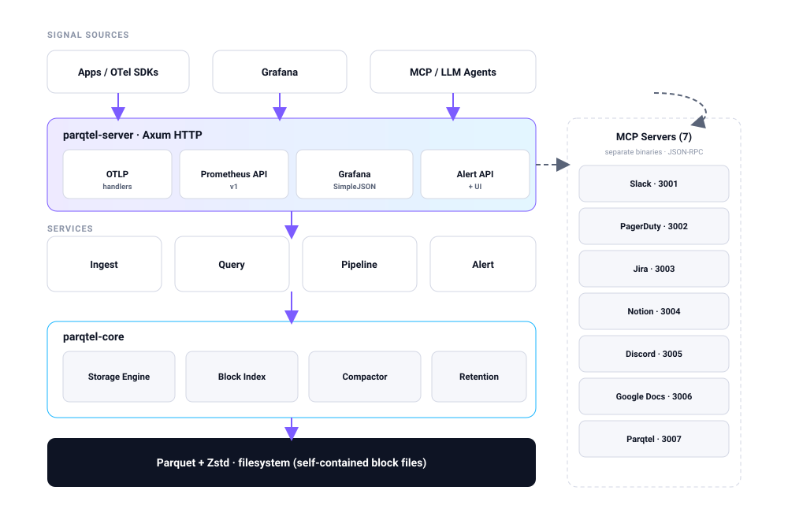
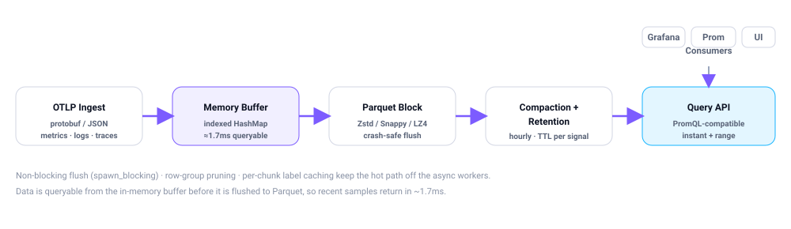
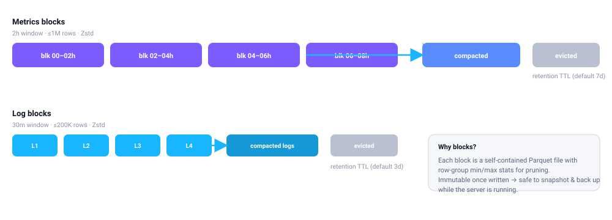

Architecture
One Axum binary does ingestion, querying, pipelines and alerting on top of parqtel-core. MCP servers run as independent sidecars so the core stays small. Everything a request touches — decode, WAL append, Parquet encode, scan, evaluate — runs off the async runtime's worker threads.

Three companion pages go deeper on the parts that carry the design: Storage engine (block model and the pruning chain), Durability & recovery (the WAL commit protocol), and Performance (every measured number, with its method).
Workspace crates
Parqtel is a Cargo workspace of 14 crates. Everything except the MCP sidecars depends only on parqtel-core.
| Crate | Responsibility |
|---|---|
parqtel-core | Data models, storage engine, block index, scanner, compaction, retention, write-ahead log, configuration. |
parqtel-ingest | OTLP protobuf/JSON decoding, block rotation, WAL append, crash-safe Parquet writing, tail sampling. |
parqtel-query | PromQL-compatible execution, ParqtelQL log/trace search, label matching, aggregations. |
parqtel-alert | Rule registry, threshold evaluation, state machine (Inactive→Pending→Firing→Resolved), alert store, noise scoring. |
parqtel-pipeline | Recording rules, stream-processing pipelines, PromQL/DQL expression evaluation. |
parqtel-server | Axum HTTP server, route handlers, middleware, OTLP gRPC (tonic), self-telemetry, built-in UI. Binary: parqtel. |
parqtel-mcp-core | Shared MCP framework: Streamable HTTP transport, JSON-RPC, rate limiting, tool registry, parameter sanitisation. |
parqtel-mcp-{slack,pagerduty,jira,notion,discord,gdocs,parqtel} | Standalone tool servers for external integrations and for querying Parqtel itself. |
parqtel-server ─┬─ parqtel-core
├─ parqtel-ingest ─┐
├─ parqtel-query ─┼─ parqtel-core
├─ parqtel-alert ─┤
└─ parqtel-pipeline┘
parqtel-mcp-{slack,pagerduty,jira,notion,discord,gdocs,parqtel}
└── parqtel-mcp-core # no dependency on parqtel-coreData flow

1 · Transport
OTLP payloads arrive over HTTP (/v1/{metrics,logs,traces}, content-negotiated between protobuf and JSON by Content-Type) or over the dedicated OTLP gRPC server on :4317 (tonic — all three collector services, routed through the identical decode path). gRPC is the OTel SDK default transport. Both respect ingest.max_body_size; gRPC message limits are derived from it, so the two transports cannot disagree about batch size.
2 · Decode
parqtel-ingest converts OTLP payloads to internal Metric / LogRecord / Span models. Decode runs on the blocking pool.
3 · Buffer
Metrics, logs and traces are all immediately queryable through an in-memory buffer (metrics indexed by name; spans matched by interval overlap). The buffer injects service.name from resource attributes into point labels, so a PromQL matcher behaves identically before and after a flush. The buffer drains only when a block becomes durable, so buffered and flushed rows never double-count.
4 · Derive and sample
- Span-metrics RED bridge. Server-kind spans automatically derive
traces_service_{requests,errors,duration_ms}_total(labelsservice,operation,service.name) and feed them back through the normal metrics path. Services get out-of-the-box RED metrics with no hand-written instrumentation. Trace decode merges resource attributes into span attributes, span attributes winning on conflict. - Tail sampling runs after RED derivation, so derived metric rates stay accurate while only sampled traces reach storage. A trace is kept if any rule votes keep:
keep_errors, thenslow_trace_ms, then a probabilisticsampling_ratiohashed ontrace_id— so whole traces live or die together. Per-service overrides replace the global policy. The default keeps everything at zero cost.
5 · WAL, then acknowledge
Each decoded value is appended to the signal's write-ahead log while the rotator lock is held, so WAL order and writer order are the same total order — the property that makes the committed position provably correct. The HTTP request is acknowledged once the append returns. Full protocol in Durability & recovery.
6 · Rotate and flush
When the block duration elapses or the row cap is reached, the rotator checks capacity before pushing (so a batch larger than the cap is split across blocks rather than half-rejected), swaps out its writers, and hands the encode to spawn_blocking. Parquet encode, compression and disk I/O never touch an async worker.
For metrics with a WAL attached, the encode goes to a background flush worker bounded by ingest.max_inflight_flushes. A full queue encodes inline, so backpressure degrades to synchronous rather than growing a backlog. Logs and traces always flush inline.
7 · Publish and commit
The block is written to a temp name and renamed into place, its metadata is published to the index task, the flush waits for the index.json sidecar to become durable, and only then is the WAL commit point advanced. Segments below the commit are deleted. Then — and only then — the memory buffer is drained.
Storage model
Data lives in self-contained, immutable Parquet block files. A block is never modified in place, so a query is a set of prune decisions followed by a parallel read, and a backup is a file copy.

| Signal | Block window | Max rows | Row group | Retention |
|---|---|---|---|---|
| Metrics | 2 h | 1 000 000 | 100 000 | 7 days |
| Logs | 30 min | 200 000 | 20 000 | 3 days |
| Traces | 2 h (reuses storage.*) | 1 000 000 | 100 000 | 7 days |
- Five-level pruning. Block index → time statistics →
metric_namestatistics →service_namestatistics → column projection. Rows are written grouped by metric name, which is what makes the name tests exact rather than probabilistic. Every level fails open. - Column projection. The metrics scan reads 7 of 15 columns. Logs and traces are not projected yet.
- Compaction merges small blocks hourly (up to 12 sources per merge, up to 8 merges per cycle). Merge limits are configuration, not literals.
- Retention is per-signal and configurable.
- Self-healing index. At startup the block index is reconciled against the data directory in both directions — unknown blocks adopted from their Parquet footer, vanished entries dropped.
Read the storage engine page →
Query path
Three query surfaces over one storage engine.
| Surface | Signals | Grammar | Endpoint |
|---|---|---|---|
| ParQL | Metrics | PromQL-compatible Pratt parser → AST: selectors, calls, aggregations with by/without, binary ops with on()/ignoring()/group_left, subqueries, offset | /api/v1/query, /api/v1/query_range |
| ParqtelQL | Logs, traces | Lenient boolean: terms, phrases, wildcards, -exclusion, OR/AND/NOT, field operators, ranges, field:* exists, body: contains, severity thresholds | /api/v1/logs, /v1/traces/search |
| PQL pipelines | All three | fetch … | filter … | parse … | stats … by … interval=… | limit | correlate traces|logs window=… | POST /v1/search |
Resolution
A query resolves in three stages, each with its own pruning mechanism (see the pruning chain):
- Index lookup —
BlockIndex::queryfilters by time range and metric-name set membership. No I/O. - Row-group and column pruning — statistics first (exact, free), bloom filters only as a fallback.
- Decode and evaluate — on the blocking pool, with
max_seriesandmax_samples_per_seriesenforced on both the plan and AST paths.
Series labels are shared behind an Arc, so a series' labels are cloned once per block rather than once per step. Aggregation groups are keyed by fingerprint with the group's label set built once per distinct group. Step results are folded into the response as they are produced rather than all being retained, so peak memory is one step's vector.
Log and trace search build a prepared query once per request — regexes and wildcards compiled, needles lowercased — instead of per row, with an allocation-free ASCII-case-folded substring scan. Trace predicates are pushed down into the scan, before result caps.
A 88→98-case conformance corpus gates semantic changes to the query engine. Instant queries use the Prometheus-default 5-minute lookback (query.lookback_delta_ns).
Alert path
- Rule loading —
AlertRuleRegistryloads YAML fromrules_dir, and watches for changes vianotify. Built-in preset packs can be embedded at compile time and activated by canary-metric detection. - Evaluation — a background loop (
server.alert_interval_secs, default 15 s) evaluates enabled rules over a trailingquery.lookback_delta_nswindow — the same window an operator sees in the UI. - State machine — each alert instance moves through
Inactive → Pending → Firing → Resolved, with noise scoring to suppress recurring alerts. - Storage and notification —
AlertStorepersists instances with transition history; firing alerts can trigger MCP actions and notification routes.
The alert loop uses the query plan path, not the AST engine. A rule query is a single selector with an optional aggregation — no cross-metric arithmetic, and no histogram_quantile. See known issues.
Pipeline path
- Recording rules and pipeline definitions are loaded from YAML.
- The
Rulerevaluates PromQL/DQL expressions on a schedule, with backfill support. - Stream pipelines process incoming data through configurable stages: preprocessor → processor → metric extractor → router.
- Derived metrics are written back into the ingestion path, so a pipeline output is queryable like any other metric.
Concurrency model
| Concern | Mechanism |
|---|---|
| Async runtime | Tokio, full features |
| Shared state | Arc<Inner> wrapped in AppState — cheaply cloneable |
| Metrics ingest | One writer buffer per shard (ingest.rotator_shards, default 4) behind per-shard locks, so unrelated metrics ingest concurrently during a flush. Shards merge into one block — block count and durability unchanged. |
| Log and trace ingest | A single tokio::sync::Mutex per signal |
| Block index | tokio::sync::RwLock — readers do not block each other |
| Blocking work | Parquet encode/compress/IO, block scans, OTLP decode and query evaluation run on spawn_blocking with the semaphore permit acquired before spawning. No async worker is ever parked on disk or on CPU. |
| Channels | mpsc::unbounded_channel for writer→index metadata; mpsc::channel(max_inflight_flushes) for the background flush worker |
| Background tasks | Flush check (server.flush_interval_secs, 5 s), alert evaluation (server.alert_interval_secs, 15 s), compaction, retention, index persistence, flush worker |
Lock discipline is the load-bearing rule: selection and publication take the write lock; all disk work happens on the blocking pool with no lock held. Retention and compaction both select under a read lock, unlink off-lock, and only then take the write lock to update the index. That is why a deletion sweep never blocks a query.
Configuration layering
Resolved by Figment, highest priority first:
- CLI flags —
--config,--bind,--data-dir,--log-level - Environment variables —
PARQTEL__prefix,__as the nested separator (e.g.PARQTEL__STORAGE__COMPRESSION). The single-underscore form also works. - TOML config file —
config/default.toml, or the path from--config/PARQTEL_CONFIG - Built-in defaults
Sections map 1:1 to the structs in parqtel-core/src/config/: server, storage, logs, ingest, query, ui, telemetry, alerts, k8s_provider. Everything is validated at startup — including combinations that would silently disable an optimisation, such as a row_group_size above max_rows_per_block. Full reference: Configuration.
Embedded console
/ui is a single-file vanilla-JS app (parqtel-server/src/ui.html) embedded via include_str! and served pre-gzipped with a content-hash ETag — zero per-request cost, zero external requests, works air-gapped.
- Overview — per-signal stat cards, storage and ingest-volume charts, live ingestion-rate cards (60 s average, per-second spike/gap sparkline, status dot, wire bytes/sec) backed by
/api/v1/ingest_rates. - Query builder — a function catalogue covering the engine's surface, typed argument editors,
by/withoutgrouping, window-function wrapping, live preview, and bounded high-cardinality autocomplete (top-10 recent values with server-side prefix match). The Builder⇄Code toggle reverse-parses a typed query on open. - Logs, traces, alerts — facet sidebar, trace-grouped browse list with waterfall, alert stream with an Evidence tab (metric chart + correlated logs), form-based rule editor with a YAML escape hatch, saved views.
Code conventions and build
Safety
#[forbid(unsafe_code)] workspace-wide. unwrap, expect and panic are denied by clippy.
Errors
thiserror typed error enums in libraries; anyhow at the binary boundary.
Release profile
Fat LTO, one codegen unit, symbols stripped, panic = "abort", opt-level = 3. MSRV 1.87.
Container
Multi-stage: cargo-chef planner → builder → a minimal glibc rootfs assembled in a runtime-libs stage → FROM scratch. ~15 MB, no shell, non-root (UID 65532), read-only rootfs.
Data compatibility. The arrow2 → arrow 59 migration changed the on-disk encoding: blocks written by arrow2-era builds are unreadable by the current reader. Upgrading across that boundary requires wiping the data directory. Rolling back within the current encoding is safe.
MCP architecture
MCP servers are separate binaries on parqtel-mcp-core, each exposing JSON-RPC over a spec-compliant Streamable HTTP transport (POST/GET/DELETE /mcp; the legacy /tools/list and /tools/call routes remain as deprecated aliases). Each registers tools with typed JSON-Schema input schemas and a token-bucket rate limiter.
Before a tool's parameters reach the audit log they pass through a sanitiser that replaces any key containing token, api_key, password, secret, authorization, auth, session, cookie or private — recursing uniformly through objects and arrays. See MCP servers.
Source: docs/ARCHITECTURE.md in the repository.